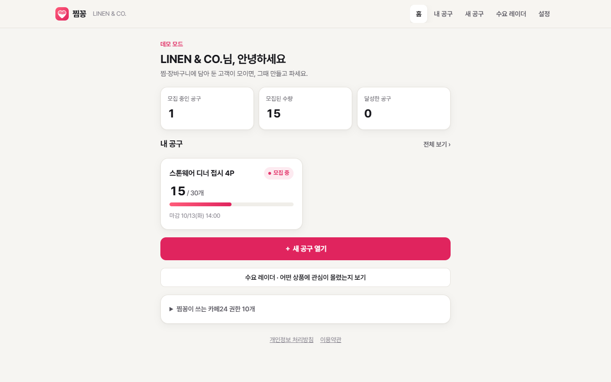
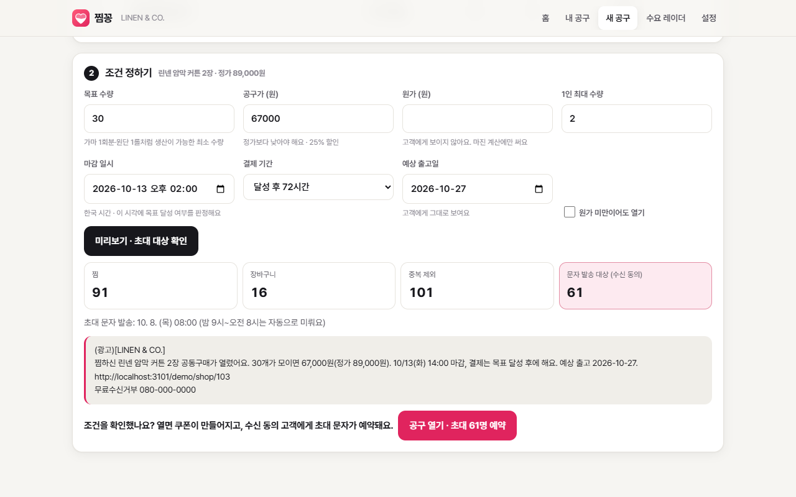
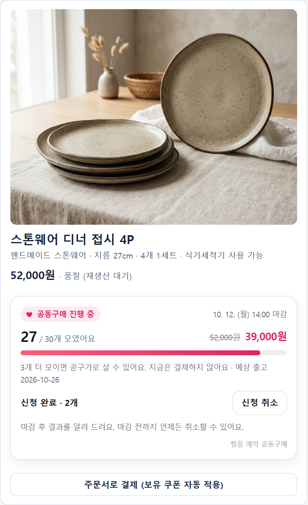
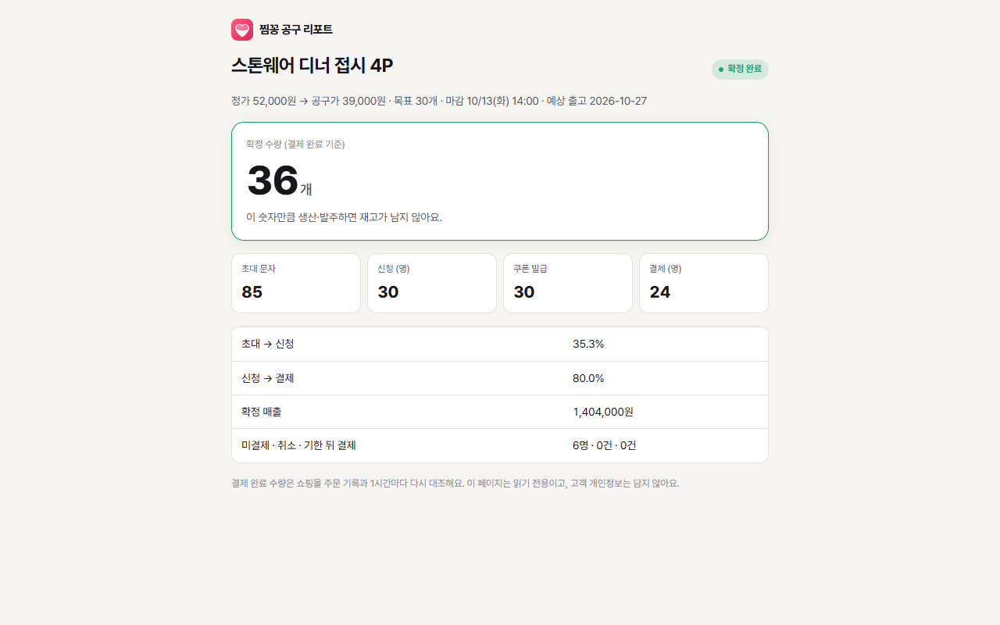

찜꽁
찜·장바구니 고객이 모이면, 그때 만들고 파세요.
결제 없는 예약 공동구매 앱
이런 고민, 있으셨죠?
- 품절된 상품에 찜은 계속 쌓이는데, 재생산하자니 재고가 남을까 걱정돼요.
- 가마 1회분·원단 1롤처럼 최소 생산 수량이 있어 소량으로는 다시 만들 수 없어요.
- 장바구니에 담아 두고 떠난 고객을 다시 불러올 방법이 마땅치 않아요.
찜꽁은 이렇게 해결해요
1. 수요가 몰린 상품 찾기
장바구니·찜에 많이 담긴 상품을 순위로 보여 드려요.
2. 목표 수량·공구가로 공구 열기
관심 고객에게 초대 문자를 보내고, 상품 페이지에 진행률과 참여 버튼이 자동으로 붙어요.
3. 고객은 결제 없이 참여 신청
목표에 못 미치면 진행되지 않고, 고객도 판매자도 손해가 없어요.
4. 목표 달성 시 쿠폰 발급 → 결제 → 확정 수량
신청자에게만 공구가 쿠폰을 드리고, 실제 결제된 수량을 ‘확정 수량’으로 알려 드려요. 그만큼만 생산하면 재고가 남지 않아요.

판매자 홈 — 시작하기 체크리스트와 진행 중인 공구

조건만 정하면 초대 대상과 문자 내용을 미리 보여 드려요

상품 페이지에 붙는 진행률 위젯 — 고객은 결제 없이 참여 신청

결제가 끝나면 확정 수량 리포트 — 공방·공장에 링크로 공유
안심하고 쓰세요
- 고객 이름·전화번호·주소는 저장하지 않아요. 문자는 카페24 SMS로 회원 ID만 넘겨 보내요.
- 광고 문자에는 (광고) 표기·무료수신거부 번호가 자동으로 들어가고, 밤 9시~오전 8시에는 보내지 않아요.
- 수신을 거부한 고객은 카페24 발송 단계에서 자동으로 빠져요.
- 쿠폰은 신청한 회원에게만, 공구 상품에만, 1회만 쓸 수 있어요.
요금
무료 · 문자 발송 비용은 쇼핑몰의 카페24 SMS 충전금에서 차감돼요.
자주 묻는 질문
Q. 목표 수량을 못 채우면 어떻게 되나요?
공구가 진행되지 않고 신청자에게 결과 안내 문자만 가요. 결제가 없었으니 환불할 것도 없어요.
Q. 고객은 언제 결제하나요?
마감 때 목표를 넘으면 신청자에게 공구가 쿠폰이 발급되고, 정해진 결제 기간(48·72시간) 안에 쇼핑몰에서 평소처럼 결제해요.
Q. 문자는 누구에게 가나요?
해당 상품을 장바구니에 담은 회원 중 문자 수신에 동의한 분께만 가요. 비회원은 상품 페이지 위젯으로 공구를 볼 수 있어요.
Q. 스킨을 수정해야 하나요?
아니요. 앱을 설치하면 상품 상세 페이지 구매 버튼 아래에 위젯이 자동으로 붙어요.
Q. 앱을 삭제하면 데이터는요?
카페24 접근 권한은 즉시 지우고, 남은 데이터는 30일 뒤 모두 파기해요.
문의 dlrbgus8555@gmail.com · 개인정보 처리방침 · 이용약관